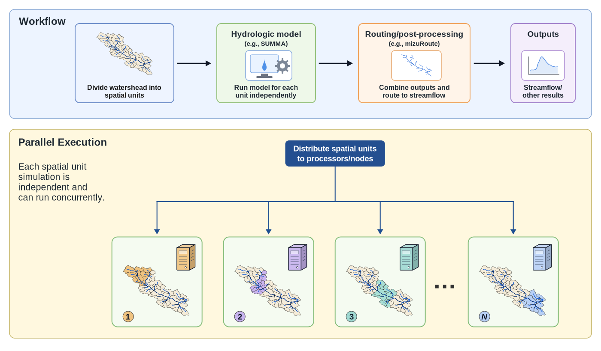

Read the shared Activity Overview before starting this activity. It defines the scenario, learning objectives, and common memo deliverable.
This activity focuses on a distributed SUMMA-mizuRoute workflow for the Bow River at Banff case. The watershed domain is divided into 52 spatial units called grouped response units (GRUs). SUMMA simulates each GRU independently, and mizuRoute routes the resulting runoff to the basin outlet.
The workflow is currently implemented as a serial script that executes SUMMA once per GRU. Starting from this serial workflow, you will run the baseline model, modify the SUMMA portion to execute multiple GRUs at the same time, and evaluate how runtime and efficiency change as CPU cores are added.
If you are using the vhpc-hydrotools virtual cluster, change into the repository checkout:
cd /workspace/hydrolearn-hpcIf you are using another Slurm cluster, clone the repository yourself in a location of your choice:
git clone https://github.com/tristanmontoya/hydrolearn-hpc.git
cd hydrolearn-hpcThen change into the case directory:
cd bow_at_banff_distributed_executionInspect the following files:
scripts/run_SUMMA_mizuRoute.sh
scripts/submit_run.shThe workflow script executes SUMMA and mizuRoute, while the submission script requests computing resources from Slurm.
In run_SUMMA_mizuRoute.sh, SUMMA is executed sequentially over all GRUs using:
for gru_index in $(seq 1 "${n_gru}"); do
"${summa_exe}" -g "${gru_index}" 1 -r never -m "${summa_filemanager}"
doneSUMMA supports running a subset of GRUs using the command:
summa.exe -m master_file -g startGRU countGRU [-r freqRestart]where:
startGRU is the first GRU indexcountGRU is the number of consecutive GRUs to simulate-r is the restart control (e.g., never disables restart output)In this workflow, each SUMMA model call uses:
-g "${gru_index}" 1which means:
startGRU = gru_indexcountGRU = 1Therefore, each SUMMA execution simulates exactly one GRU.
Run the baseline model using Slurm:
sbatch scripts/submit_run.shSlurm will print a line such as Submitted batch job 123456. Replace 123456 with your job ID. After completion, record the runtime.
Runtime can be found using:
sacct -j 123456 --format=JobID,Elapsedor:
seff 123456Deliverable: the Serial Workflow section of your memo must provide a high-level overview of the workflow and address the following questions:
The diagram below summarizes the computational pattern used in this scenario: independent spatial units can be distributed across processors before routing and output generation.

Inspect the CPU resources that Slurm can allocate:
sinfo -N -o "%N %P %c %t"The -N option prints one line per node. The -o option selects the output columns:
%N: node name%P: partition name%c: number of CPUs on the node%t: node stateUse the %c column to identify how many CPU cores a node can provide. In this workflow, the parallel work is created by launching multiple background SUMMA processes from one Slurm task.
For each experiment, set --cpus-per-task equal to the number of concurrent SUMMA processes you plan to launch. Do not test more processors than the allocated node can provide. On the vhpc-hydrotools virtual cluster, use small processor counts such as 1, 2, 3, and 4. On an actual Slurm cluster, use processor counts that are allowed by the partition, account, and allocation limits for the system you are using.
Convert the workflow to execute two GRU batches simultaneously by replacing the serial SUMMA loop with two background processes.
Replace the serial loop:
for gru_index in $(seq 1 "${n_gru}"); do
"${summa_exe}" -g "${gru_index}" 1 -r never -m "${summa_filemanager}"
donewith:
"${summa_exe}" -m "${summa_filemanager}" -g 1 26 -r never &
"${summa_exe}" -m "${summa_filemanager}" -g 27 26 -r never &
wait& launches a process in the background so that both SUMMA simulations execute concurrently.wait pauses the script until both SUMMA processes have completed before continuing to mizuRoute.Update the Slurm submission script so the requested resources match the parallel workflow.
For example, modify
#SBATCH --cpus-per-task=1to
#SBATCH --cpus-per-task=2Resubmit the job and record the runtime. This two-core run is the first parallel experiment and provides a template for the additional processor counts below.
Repeat the experiment for 3, 4, and additional processor counts, up to the CPU cores available in your Slurm allocation.
Design approximately balanced GRU assignments for each experiment.
Deliverable: the Parallelization section of your memo must address the following questions:
Complete the following table.
| CPU Cores | Runtime | Speedup | Parallel Efficiency |
|---|---|---|---|
| 1 | |||
| 2 | |||
| 3 | |||
| 4 | |||
| Largest Tested |
Compute the following quantities:
Here, is the fixed distributed simulation workload, is the number of CPU cores, is the one-core runtime, and is the runtime using cores.
Discuss:
Deliverable: the Performance Evaluation section of your memo must report the runtime and performance table, the speedup values, and the parallel efficiency values. Briefly interpret whether adding CPU cores improved runtime and whether the speedup was close to ideal.
Deliverable: the Recommendation and Reflection section of your memo must provide recommendations for a research group planning larger distributed simulations and address the following questions:
At the end of your memo, include an appendix that contains the information needed to reproduce your results.
Deliverable: the Reproducibility Appendix section of your memo must include:
run_SUMMA_mizuRoute.sh used for each processor count.submit_run.sh used for each processor count.sinfo -N -o "%N %P %c %t"